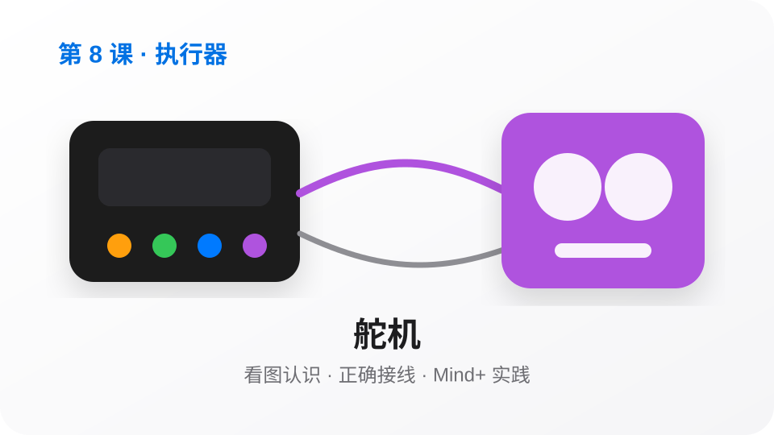
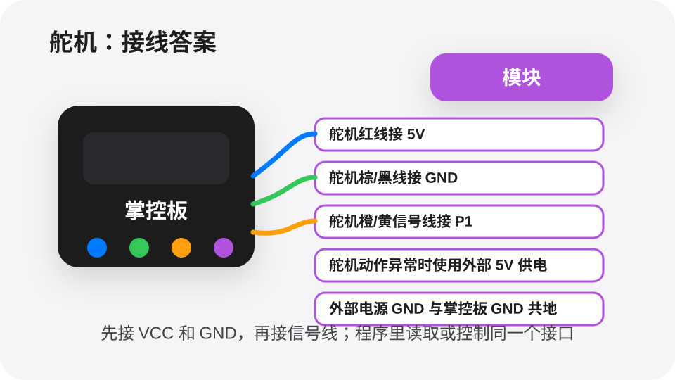

让舵机转到0度、90度、180度。
测试舵机能否转到指定角度。
接线答案
舵机信号线接 P1
红线接 5V，黑/棕线接 GND
Mind+可视化程序答案
当掌控板启动
设置 P1 舵机角度为 0 度
等待 1 秒
设置 P1 舵机角度为 90 度
等待 1 秒
设置 P1 舵机角度为 180 度
等待 1 秒
今天我们学习一个能让作品更聪明的小模块。目标不是背知识，而是做出能看见、会判断、能行动的小作品。

自动门、小旗子、机器人手臂都需要转到某个角度，舵机就是做这件事的。
舵机最早常见于模型和自动控制领域，现在常用来做机器人关节、小门和指针。
舵机能转到指定角度，很适合做门、指针和机械臂。
舵机不是普通电机，它会转到指定角度。信号线接哪个 P 口，Mind+ 程序就要控制哪个 P 口。
接线和程序接口必须一致。先跑最小测试，再做完整任务。

执行器负责把电信号变成动作。程序给出方向、角度或速度，模块就按照命令运动。
测试舵机能否转到指定角度。
按按钮让舵机在开/关两个角度间切换。
用超声波检测有人靠近，舵机模拟开门。
挑战：做一个“自动闸门”。按钮按下后舵机打开到 90 度，等待 3 秒后自动回到 0 度；再加一个屏幕提示「请通过」。